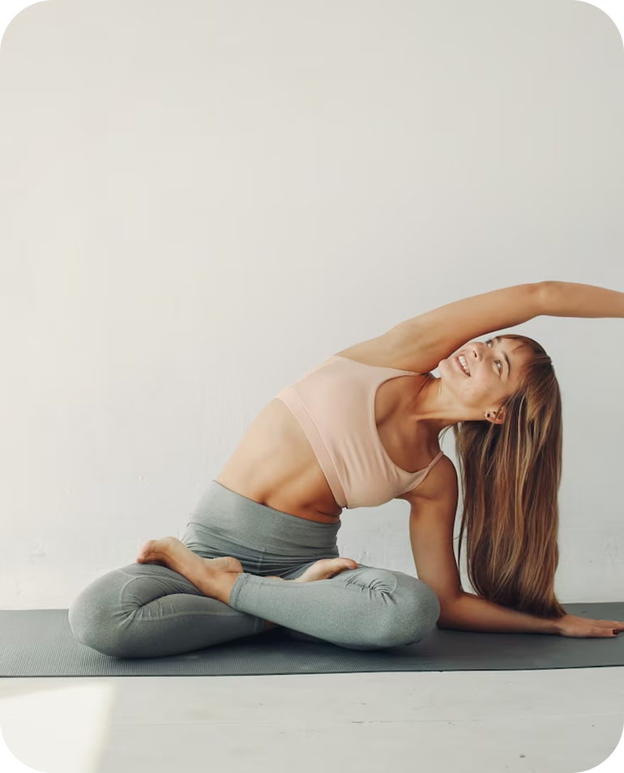
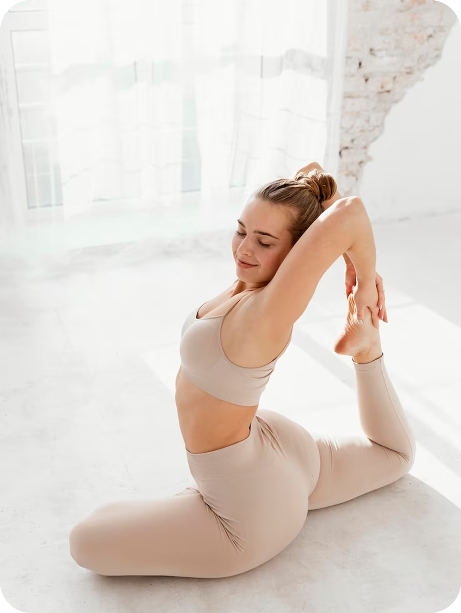
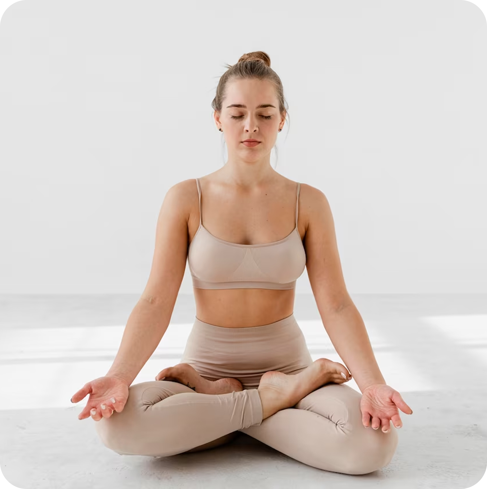
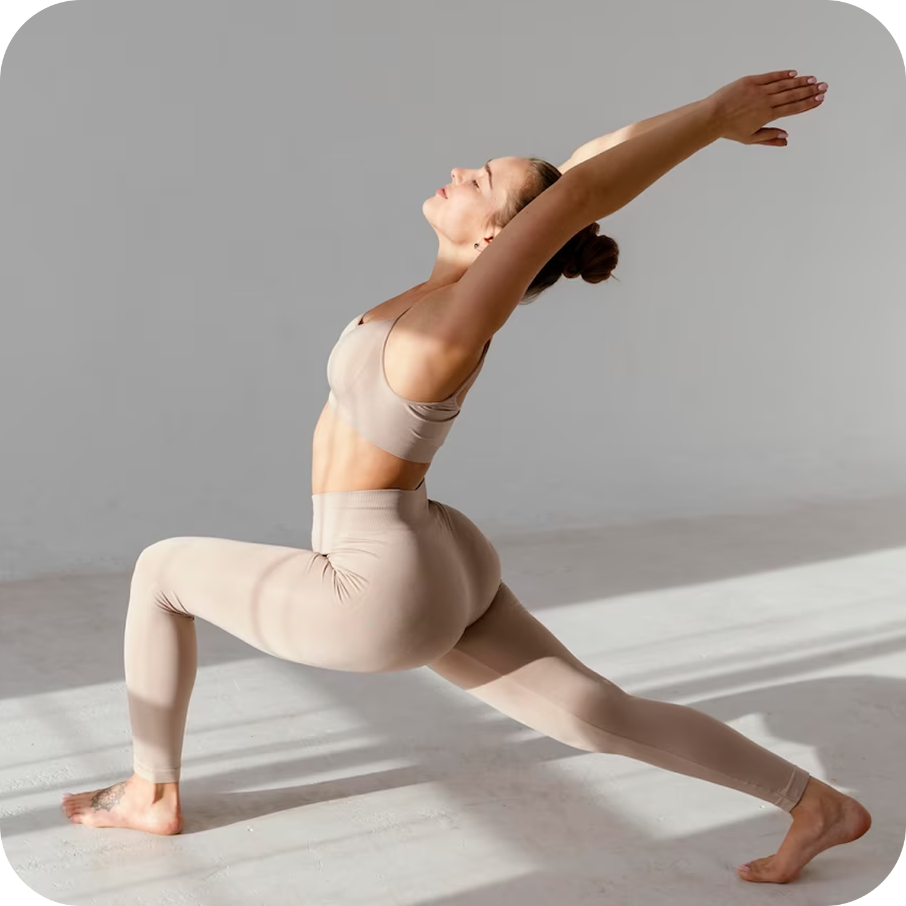

Категорія: Медитація

Йога-медитація на світанку (формат WebP / AVIF)
Категорія: Асани

Класичні пози йоги (асани) у форматі AVIF/WebP
Категорія: Природа та баланс

Йога на природі — баланс і спокій (формат WebP / AVIF)
Категорія: Колективна йога

Колективна йога на пляжі (формат AVIF / WebP)